00. 目录
00. 目录01. 学习目标02. 进程和程序 (理解)03. 单道、多道程序设计(了解)3.1 单道程序设计3.2 多道程序设计04. 并行和并发(理解)05. MMU(了解)06. 进程控制块PCB(了解)07. 进程的状态(重点)7.1 ps20.2 top 20.3 kill20.4 killall08. 进程号和相关函数8.1 getpid函数8.2 getppid函数8.3 getpgid函数09. 进程的创建（重点）10. 父子进程关系11. 区分父子进程12. 父子进程地址空间13. 进程相关命令13.1 ps命令13.2 kill命令14. GDB调试多进程15. 进程退出函数16. 等待子进程退出函数16.1 概述16.2 wait函数16.3 waitpid函数17. 孤儿进程18. 僵尸进程19. 进程替换20. 源码包安装(扩展)21. 作业22. 总结
01. 学习目标
- 掌握目录遍历相关的函数使用
- 了解进程相关的概念
- 掌握fork/getpid/getppid函数的使用
- 熟练掌握ps/kill命令的使用
- 熟练掌握execl/execlp函数的使用
- 说出什么是孤儿进程和僵尸进程
02. 进程和程序 (理解)
我们平时写的 C 语言代码，通过编译器编译，最终它会成为一个可执行程序，当这个可执行程序运行起来后（没有结束之前），它就成为了一个进程。
程序是存放在存储介质上的一个可执行文件，而进程是程序执行的过程。进程的状态是变化的，其包括进程的创建、调度和消亡。程序是静态的，进程是动态的。
示例：
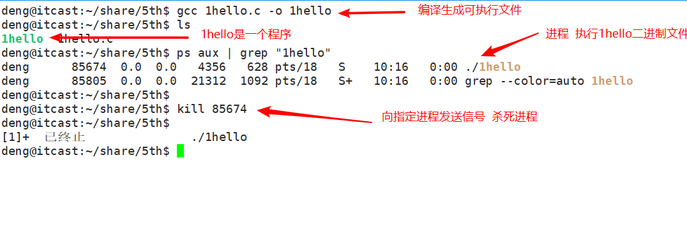
程序就类似于剧本(纸)，进程类似于戏(舞台、演员、灯光、道具...)，同一个剧本可以在多个舞台同时上演。同样，同一个程序也可以加载为不同的进程(彼此之间互不影响)。
在 Linux 系统中，操作系统是通过进程去完成一个一个的任务，进程是管理事务的基本单元。
进程拥有自己独立的处理环境（如：当前需要用到哪些环境变量，程序运行的目录在哪，当前是哪个用户在运行此程序等）和系统资源（如：处理器 CPU 占用率、存储器、I/O设备、数据、程序）。
我们可以这么理解，公司相当于操作系统，部门相当于进程，公司通过部门来管理（系统通过进程管理），对于各个部门，每个部门有各自的资源，如人员、电脑设备、打印机等。
03. 单道、多道程序设计(了解)
3.1 单道程序设计
所有进程一个一个排队执行。若A阻塞，B只能等待，即使CPU处于空闲状态。而在人机交互时阻塞的出现是必然的。所有这种模型在系统资源利用上及其不合理，在计算机发展历史上存在不久，大部分便被淘汰了。
3.2 多道程序设计
在计算机内存中同时存放几道相互独立的程序，它们在管理程序控制之下，相互穿插的运行。多道程序设计必须有硬件基础作为保证。
在计算机中时钟中断即为多道程序设计模型的理论基础。并发时，任意进程在执行期间都不希望放弃cpu。因此系统需要一种强制让进程让出cpu资源的手段。时钟中断有硬件基础作为保障，对进程而言不可抗拒。 操作系统中的中断处理函数，来负责调度程序执行。
在多道程序设计模型中，多个进程轮流使用CPU (分时复用CPU资源)。而当下常见CPU为纳秒级，1秒可以执行大约10亿条指令。由于人眼的反应速度是毫秒级，所以看似同时在运行。
1s = 1000ms
1ms = 1000us
1us = 1000ns
1s = 1000000000ns
04. 并行和并发(理解)
并行(parallel)：指在同一时刻，有多条指令在多个处理器上同时执行。
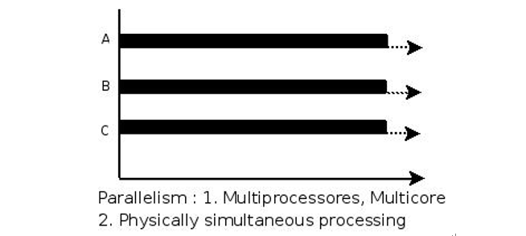
并发(concurrency)：指在同一时刻只能有一条指令执行，但多个进程指令被快速的轮换执行，使得在宏观上具有多个进程同时执行的效果，但在微观上并不是同时执行的，只是把时间分成若干段，使多个进程快速交替的执行。
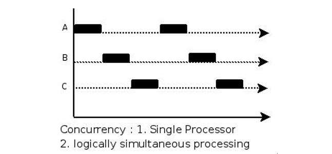
举例说明：
- 并行是两个队列同时使用两台咖啡机
- 并发是两个队列交替使用一台咖啡机
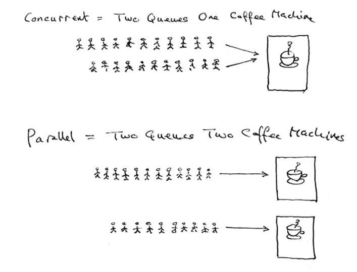
05. MMU(了解)
MMU是Memory Management Unit的缩写，中文名是内存管理单元，它是中央处理器（CPU）中用来管理虚拟存储器、物理存储器的控制线路，同时也负责虚拟地址映射为物理地址，以及提供硬件机制的内存访问授权，多用户多进程操作系统。
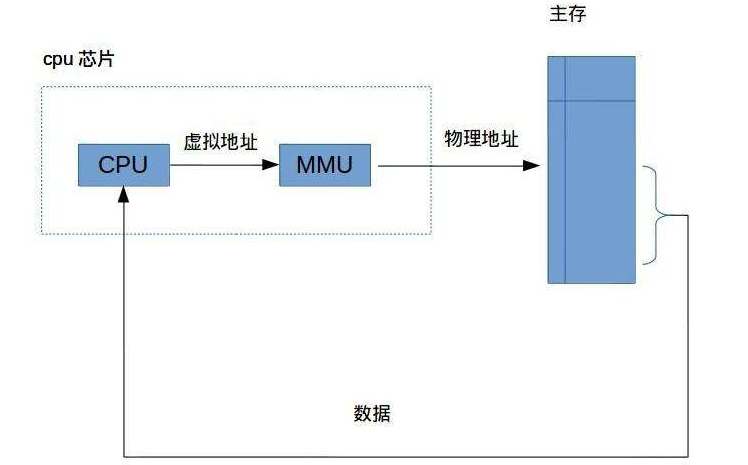
06. 进程控制块PCB(了解)
进程运行时，内核为进程每个进程分配一个PCB（进程控制块），维护进程相关的信息，Linux内核的进程控制块是task_struct结构体。
在 /usr/src/linux-headers-xxx/include/linux/sched.h 文件中可以查看struct task_struct 结构体定义：
deng@itcast:~/share$ vim /usr/src/linux-headers-4.10.0-28/include/linux/sched.h
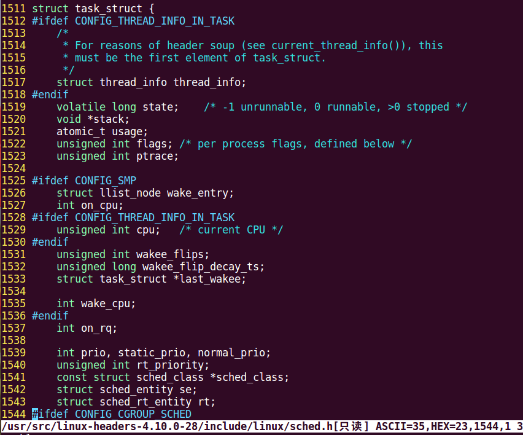
其内部成员有很多，我们掌握以下部分即可：
- 进程id。系统中每个进程有唯一的id，在C语言中用pid_t类型表示，其实就是一个非负整数。
- 进程的状态，有就绪、运行、挂起、停止等状态。
- 进程切换时需要保存和恢复的一些CPU寄存器。
- 描述虚拟地址空间的信息。
- 描述控制终端的信息。
- 当前工作目录（Current Working Directory）。
- umask掩码。
- 文件描述符表，包含很多指向file结构体的指针。
- 和信号相关的信息。
- 用户id和组id。
- 会话（Session）和进程组。
- 进程可以使用的资源上限（Resource Limit）。
07. 进程的状态(重点)
进程状态反映进程执行过程的变化。这些状态随着进程的执行和外界条件的变化而转换。
在三态模型中，进程状态分为三个基本状态，即运行态，就绪态，阻塞态。
在五态模型中，进程分为新建态、终止态，运行态，就绪态，阻塞态。

①TASK_RUNNING：进程正在被CPU执行。当一个进程刚被创建时会处于TASK_RUNNABLE，表示己经准备就绪，正等待被调度。
②TASK_INTERRUPTIBLE（可中断）：进程正在睡眠（也就是说它被阻塞）等待某些条件的达成。一旦这些条件达成，内核就会把进程状态设置为运行。处于此状态的进程也会因为接收到信号而提前被唤醒，比如给一个TASK_INTERRUPTIBLE状态的进程发送SIGKILL信号，这个进程将先被唤醒（进入TASK_RUNNABLE状态），然后再响应SIGKILL信号而退出（变为TASK_ZOMBIE状态），并不会从TASK_INTERRUPTIBLE状态直接退出。
③TASK_UNINTERRUPTIBLE（不可中断）：处于等待中的进程，待资源满足时被唤醒，但不可以由其它进程通过信号或中断唤醒。由于不接受外来的任何信号，因此无法用kill杀掉这些处于该状态的进程。而TASK_UNINTERRUPTIBLE状态存在的意义就在于，内核的某些处理流程是不能被打断的。如果响应异步信号，程序的执行流程中就会被插入一段用于处理异步信号的流程，于是原有的流程就被中断了，这可能使某些设备陷入不可控的状态。处于TASK_UNINTERRUPTIBLE状态一般总是非常短暂的，通过ps命令基本上不可能捕捉到。
④TASK_ZOMBIE（僵死）：表示进程已经结束了，但是其父进程还没有调用wait4或waitpid()来释放进程描述符。为了父进程能够获知它的消息，子进程的进程描述符仍然被保留着。一旦父进程调用了wait4()，进程描述符就会被释放。
⑤TASK_STOPPED（停止）：进程停止执行。当进程接收到SIGSTOP，SIGTSTP，SIGTTIN，SIGTTOU等信号的时候。此外，在调试期间接收到任何信号，都会使进程进入这种状态。当接收到SIGCONT信号，会重新回到TASK_RUNNABLE。
如何查看进程状态：
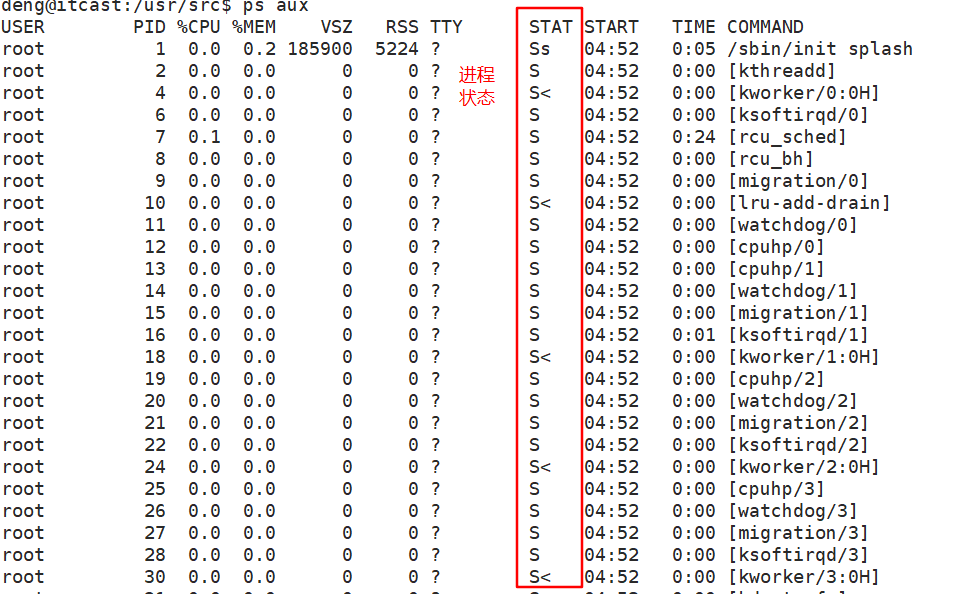
stat中的参数意义如下：
| 参数 | 含义 |
|---|---|
| D | 不可中断 Uninterruptible（usually IO） |
| R | 正在运行，或在队列中的进程 |
| S(大写) | 处于休眠状态 |
| T | 停止或被追踪 |
| Z | 僵尸进程 |
| W | 进入内存交换（从内核2.6开始无效） |
| X | 死掉的进程 |
| < | 高优先级 |
| N | 低优先级 |
| s | 包含子进程 |
| + | 位于前台的进程组 |
7.1 ps
进程是一个具有一定独立功能的程序，它是操作系统动态执行的基本单元。
ps命令可以查看进程的详细状况，常用选项(选项可以不加“-”)如下：
| 选项 | 含义 |
|---|---|
| -a | 显示终端上的所有进程，包括其他用户的进程 |
| -u | 显示进程的详细状态 |
| -x | 显示没有控制终端的进程 |
| -w | 显示加宽，以便显示更多的信息 |
| -r | 只显示正在运行的进程 |
ps aux
ps ef
ps -a

20.2 top
top命令用来动态显示运行中的进程。top命令能够在运行后，在指定的时间间隔更新显示信息。可以在使用top命令时加上-d
在top命令执行后，可以按下按键得到对显示的结果进行排序：
| 按键 | 含义 |
|---|---|
| M | 根据内存使用量来排序 |
| P | 根据CPU占有率来排序 |
| T | 根据进程运行时间的长短来排序 |
| U | 可以根据后面输入的用户名来筛选进程 |
| K | 可以根据后面输入的PID来杀死进程。 |
| q | 退出 |
| h | 获得帮助 |

20.3 kill
kill命令指定进程号的进程，需要配合 ps 使用。
使用格式：
kill [-signal] pid
信号值从0到15，其中9为绝对终止，可以处理一般信号无法终止的进程。
kill 9133 ：9133 为应用程序所对应的进程号

有些进程不能直接杀死，这时候我们需要加一个参数“ -9 ”，“ -9 ” 代表强制结束：

20.4 killall
通过进程名字杀死进程

08. 进程号和相关函数
每个进程都由一个进程号来标识，其类型为 pid_t（整型），进程号的范围：0～32767。进程号总是唯一的，但进程号可以重用。当一个进程终止后，其进程号就可以再次使用。
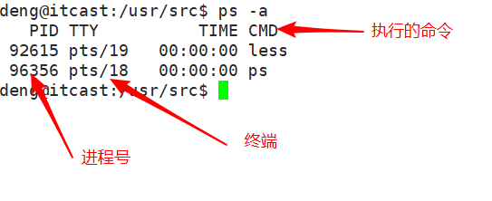
接下来，再给大家介绍三个不同的进程号。
进程号（PID）：
标识进程的一个非负整型数。
父进程号（PPID）：
任何进程（ 除 init 进程）都是由另一个进程创建，该进程称为被创建进程的父进程，对应的进程号称为父进程号（PPID）。如，A 进程创建了 B 进程，A 的进程号就是 B 进程的父进程号。
进程组号（PGID）：
进程组是一个或多个进程的集合。他们之间相互关联，进程组可以接收同一终端的各种信号，关联的进程有一个进程组号（PGID） 。这个过程有点类似于 QQ 群，组相当于 QQ 群，各个进程相当于各个好友，把各个好友都拉入这个 QQ 群里，主要是方便管理，特别是通知某些事时，只要在群里吼一声，所有人都收到，简单粗暴。但是，这个进程组号和 QQ 群号是有点区别的，默认的情况下，当前的进程号会当做当前的进程组号。
8.1 getpid函数
x14pid_t getpid(void);5功能：6 获取本进程号（PID）7参数：8 无9返回值：10 本进程号
8.2 getppid函数
xxxxxxxxxx1014pid_t getppid(void);5功能：6 获取调用此函数的进程的父进程号（PPID）7参数：8 无9返回值：10 调用此函数的进程的父进程号（PPID）
8.3 getpgid函数
xxxxxxxxxx1014pid_t getpgid(pid_t pid);5功能：6 获取进程组号（PGID）7参数：8 pid：进程号9返回值：10 参数为 0 时返回当前进程组号，否则返回参数指定的进程的进程组号
示例程序:
xxxxxxxxxx151int main()2{3 pid_t pid, ppid, pgid;45 pid = getpid();6 printf("pid = %d\n", pid);78 ppid = getppid();9 printf("ppid = %d\n", ppid);1011 pgid = getpgid(pid);12 printf("pgid = %d\n", pgid);1314 return 0;15}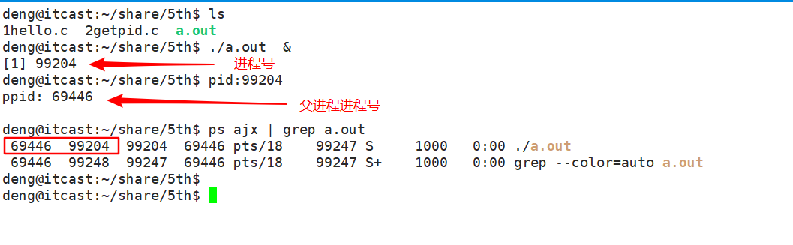
09. 进程的创建（重点）
系统允许一个进程创建新进程，新进程即为子进程，子进程还可以创建新的子进程，形成进程树结构模型。
xxxxxxxxxx1414pid_t fork(void);5功能：6 用于从一个已存在的进程中创建一个新进程，新进程称为子进程，原进程称为父进程。7参数：8 无9返回值：10 成功：子进程中返回 0，父进程中返回子进程 ID。pid_t，为整型。11 失败：返回-1。12 失败的两个主要原因是：13 1）当前的进程数已经达到了系统规定的上限，这时 errno 的值被设置为 EAGAIN。14 2）系统内存不足，这时 errno 的值被设置为 ENOMEM。示例代码：
xxxxxxxxxx71int main()2{3 fork();4 printf("id ==== %d\n", getpid()); // 获取进程号 56 return 0;7}运行结果如下：
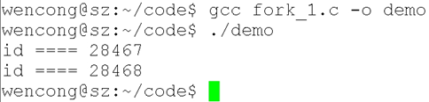
从运行结果，我们可以看出，fork() 之后的打印函数打印了两次，而且打印了两个进程号，这说明，fork() 之后确实创建了一个新的进程，新进程为子进程，原来的进程为父进程。
10. 父子进程关系
使用 fork() 函数得到的子进程是父进程的一个复制品，它从父进程处继承了整个进程的地址空间：包括进程上下文（进程执行活动全过程的静态描述）、进程堆栈、打开的文件描述符、信号控制设定、进程优先级、进程组号等。
子进程所独有的只有它的进程号，计时器等（只有小量信息）。因此，使用 fork() 函数的代价是很大的。
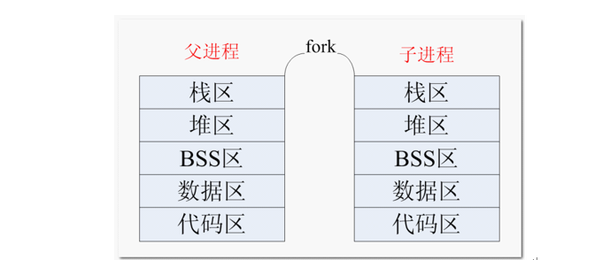
简单来说， 一个进程调用 fork() 函数后，系统先给新的进程分配资源，例如存储数据和代码的空间。然后把原来的进程的所有值都复制到新的新进程中，只有少数值与原来的进程的值不同。相当于克隆了一个自己。
实际上，更准确来说，Linux 的 fork() 使用是通过写时拷贝 (copy- on-write) 实现。写时拷贝是一种可以推迟甚至避免拷贝数据的技术。内核此时并不复制整个进程的地址空间，而是让父子进程共享同一个地址空间。只用在需要写入的时候才会复制地址空间，从而使各个进行拥有各自的地址空间。也就是说，资源的复制是在需要写入的时候才会进行，在此之前，只有以只读方式共享。
注意：fork之后父子进程共享文件，fork产生的子进程与父进程相同的文件文件描述符指向相同的文件表，引用计数增加，共享文件文件偏移指针。
11. 区分父子进程
子进程是父进程的一个复制品，可以简单认为父子进程的代码一样的。那大家想过没有，这样的话，父进程做了什么事情，子进程也做什么事情（如上面的例子），是不是不能实现满足我们实现多任务的要求呀，那我们是不是要想个办法区别父子进程呀，这就通过 fork() 的返回值。
fork() 函数被调用一次，但返回两次。两次返回的区别是：子进程的返回值是 0，而父进程的返回值则是新子进程的进程 ID。
测试程序：
xxxxxxxxxx301int main()2{3 pid_t pid;4 pid = fork();5 if (pid < 0)6 { // 没有创建成功 7 perror("fork");8 return 0;9 }1011 if (0 == pid)12 { // 子进程 13 while (1)14 {15 printf("I am son\n");16 sleep(1);17 }18 }19 else if (pid > 0)20 { // 父进程 21 while (1)22 {23 printf("I am father\n");24 sleep(1);25 }26 }2728 return 0;29}30运行结果如下：
通过运行结果，可以看到，父子进程各做一件事（各自打印一句话）。这里，我们只是看到只有一份代码，实际上，fork() 以后，有两个地址空间在独立运行着，有点类似于有两个独立的程序（父子进程）在运行着。
一般来说，在 fork() 之后是父进程先执行还是子进程先执行是不确定的。这取决于内核所使用的调度算法。
需要注意的是，在子进程的地址空间里，子进程是从 fork() 这个函数后才开始执行代码。
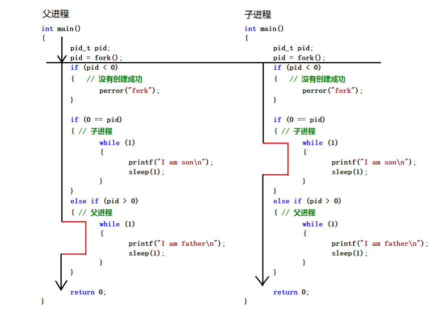
12. 父子进程地址空间
父子进程各自的地址空间是独立的
xxxxxxxxxx271int a = 10; // 全局变量23int main()4{5 int b = 20; //局部变量6 pid_t pid;7 pid = fork();8 if (pid < 0)9 { // 没有创建成功10 perror("fork");11 }1213 if (0 == pid)14 { // 子进程15 a = 111;16 b = 222; // 子进程修改其值17 printf("son: a = %d, b = %d\n", a, b);18 }19 else if (pid > 0)20 { // 父进程21 sleep(1); // 保证子进程先运行22 printf("father: a = %d, b = %d\n", a, b);23 }2425 return 0;26}27运行结果如下：
通过得知，在子进程修改变量 a，b 的值，并不影响到父进程 a，b 的值。
13. 进程相关命令
13.1 ps命令
ps命令可以查看进程的详细状况，常用选项(选项可以不加“-”)如下：
| 选项 | 含义 |
|---|---|
| -a | 显示终端上的所有进程，包括其他用户的进程 |
| -u | 显示进程的详细状态 |
| -x | 显示没有控制终端的进程 |
| -j | 列出与作业控制相关的信息 |
显示当前用户下所有进程：ps aux
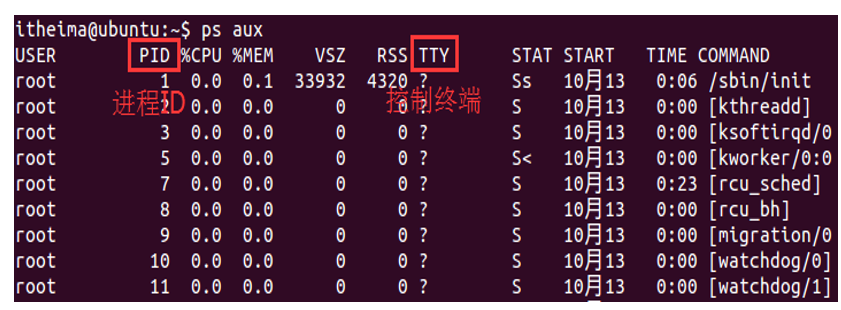
以比较完整的格式显示所有的进程：ps ajx
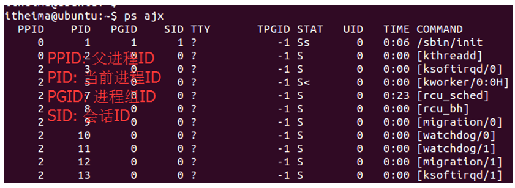
13.2 kill命令
命令功能: 发送指定的信号到相应进程。
kill 9133：9133 为应用程序所对应的进程号
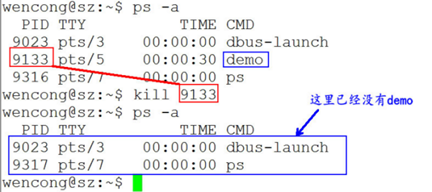
查看信号编号: kill -l(字母)
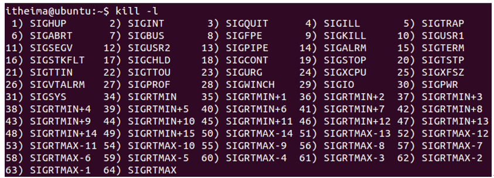
有些进程不能直接杀死，这时候我们需要加一个参数“-9”，使用9号信号SIGKILL
杀死进程: kill -SIGKILL/(-9) 89899【进程标识号】
14. GDB调试多进程
使用gdb调试的时候，gdb只能跟踪一个进程。可以在fork函数调用之前，通过指令设置gdb调试工具跟踪父进程或者是跟踪子进程。默认跟踪父进程。
- set follow-fork-mode child 设置gdb在fork之后跟踪子进程。
- set follow-fork-mode parent 设置跟踪父进程（默认）。
注意，一定要在fork函数调用之前设置才有效。
15. 进程退出函数
相关函数：
xxxxxxxxxx111void exit(int status);34void _exit(int status);6功能：7 结束调用此函数的进程。8参数：9 status：返回给父进程的参数（低 8 位有效），至于这个参数是多少根据需要来填写。10返回值：11 无exit() 和 exit() 函数功能和用法是一样的，无非时所包含的头文件不一样，还有的区别就是：exit()属于标准库函数，exit()属于系统调用函数。
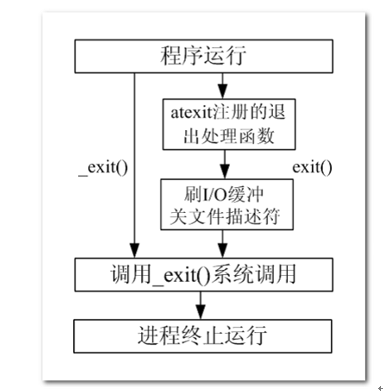
16. 等待子进程退出函数
16.1 概述
在每个进程退出的时候，内核释放该进程所有的资源、包括打开的文件、占用的内存等。但是仍然为其保留一定的信息，这些信息主要主要指进程控制块PCB的信息（包括进程号、退出状态、运行时间等）。
父进程可以通过调用wait或waitpid得到它的退出状态同时彻底清除掉这个进程。
wait() 和 waitpid() 函数的功能一样，区别在于，wait() 函数会阻塞，waitpid() 可以设置不阻塞，waitpid() 还可以指定等待哪个子进程结束。
注意：一次wait或waitpid调用只能清理一个子进程，清理多个子进程应使用循环。
16.2 wait函数
函数说明：
xxxxxxxxxx1114pid_t wait(int *status);5功能：6 等待任意一个子进程结束，如果任意一个子进程结束了，此函数会回收该子进程的资源。7参数：8 status : 进程退出时的状态信息。9返回值：10 成功：已经结束子进程的进程号11 失败： -1调用 wait() 函数的进程会挂起（阻塞），直到它的一个子进程退出或收到一个不能被忽视的信号时才被唤醒（相当于继续往下执行）。
若调用进程没有子进程，该函数立即返回；若它的子进程已经结束，该函数同样会立即返回，并且会回收那个早已结束进程的资源。
所以，wait()函数的主要功能为回收已经结束子进程的资源。
如果参数 status 的值不是 NULL，wait() 就会把子进程退出时的状态取出并存入其中，这是一个整数值（int），指出了子进程是正常退出还是被非正常结束的。
这个退出信息在一个 int 中包含了多个字段，直接使用这个值是没有意义的，我们需要用宏定义取出其中的每个字段。
宏函数可分为如下三组：
1) WIFEXITED(status)
为非0 → 进程正常结束
WEXITSTATUS(status)
如上宏为真，使用此宏 → 获取进程退出状态 (exit的参数)
2) WIFSIGNALED(status)
为非0 → 进程异常终止
WTERMSIG(status)
如上宏为真，使用此宏 → 取得使进程终止的那个信号的编号。
3) WIFSTOPPED(status)
为非0 → 进程处于暂停状态
WSTOPSIG(status)
如上宏为真，使用此宏 → 取得使进程暂停的那个信号的编号。
WIFCONTINUED(status)
为真 → 进程暂停后已经继续运行
16.3 waitpid函数
函数说明：
xxxxxxxxxx2714pid_t waitpid(pid_t pid, int *status, int options);5功能：6 等待子进程终止，如果子进程终止了，此函数会回收子进程的资源。78参数：9 pid : 参数 pid 的值有以下几种类型：10 pid > 0 等待进程 ID 等于 pid 的子进程。11 pid = 0 等待同一个进程组中的任何子进程，如果子进程已经加入了别的进程组，waitpid 不会等待它。12 pid = -1 等待任一子进程，此时 waitpid 和 wait 作用一样。13 pid < -1 等待指定进程组中的任何子进程，这个进程组的 ID 等于 pid 的绝对值。1415 status : 进程退出时的状态信息。和 wait() 用法一样。1617 options : options 提供了一些额外的选项来控制 waitpid()。18 0：同 wait()，阻塞父进程，等待子进程退出。19 WNOHANG：没有任何已经结束的子进程，则立即返回。20 WUNTRACED：如果子进程暂停了则此函数马上返回，并且不予以理会子进程的结束状态。（由于涉及到一些跟踪调试方面的知识，加之极少用到）21 22返回值：23 waitpid() 的返回值比 wait() 稍微复杂一些，一共有 3 种情况：24 1) 当正常返回的时候，waitpid() 返回收集到的已经回收子进程的进程号；25 2) 如果设置了选项 WNOHANG，而调用中 waitpid() 发现没有已退出的子进程可等待，则返回 0；26 3) 如果调用中出错，则返回-1，这时 errno 会被设置成相应的值以指示错误所在，如：当 pid 所对应的子进程不存在，或此进程存在，但不是调用进程的子进程，waitpid() 就会出错返回，这时 errno 被设置为 ECHILD；27
17. 孤儿进程
父进程运行结束，但子进程还在运行（未运行结束）的子进程就称为孤儿进程（Orphan Process）。
每当出现一个孤儿进程的时候，内核就把孤儿进程的父进程设置为 init ，而 init 进程会循环地 wait() 它的已经退出的子进程。这样，当一个孤儿进程凄凉地结束了其生命周期的时候，init 进程就会代表党和政府出面处理它的一切善后工作。
因此孤儿进程并不会有什么危害。
18. 僵尸进程
进程终止，父进程尚未回收，子进程残留资源（PCB）存放于内核中，变成僵尸（Zombie）进程。
这样就会导致一个问题，如果进程不调用wait() 或 waitpid() 的话， 那么保留的那段信息就不会释放，其进程号就会一直被占用，但是系统所能使用的进程号是有限的，如果大量的产生僵尸进程，将因为没有可用的进程号而导致系统不能产生新的进程，此即为僵尸进程的危害，应当避免。
19. 进程替换
概述
在 Windows 平台下，我们可以通过双击运行可执行程序，让这个可执行程序成为一个进程；而在 Linux 平台，我们可以通过 ./ 运行，让一个可执行程序成为一个进程。
但是，如果我们本来就运行着一个程序（进程），我们如何在这个进程内部启动一个外部程序，由内核将这个外部程序读入内存，使其执行起来成为一个进程呢？这里我们通过 exec 函数族实现。
exec 函数族，顾名思义，就是一簇函数，在 Linux 中，并不存在 exec() 函数，exec 指的是一组函数，一共有 6 个：
xxxxxxxxxx111extern char **environ;34int execl(const char *path, const char *arg, .../* (char *) NULL */);5int execlp(const char *file, const char *arg, ... /* (char *) NULL */);6int execle(const char *path, const char *arg, .../*, (char *) NULL, char * const envp[] */);7int execv(const char *path, char *const argv[]);8int execvp(const char *file, char *const argv[]);9int execvpe(const char *file, char *const argv[], char *const envp[]);1011int execve(const char *filename, char *const argv[], char *const envp[]);其中只有 execve() 是真正意义上的系统调用，其它都是在此基础上经过包装的库函数。
exec 函数族的作用是根据指定的文件名或目录名找到可执行文件，并用它来取代调用进程的内容，换句话说，就是在调用进程内部执行一个可执行文件。
进程调用一种 exec 函数时，该进程完全由新程序替换，而新程序则从其 main 函数开始执行。因为调用 exec 并不创建新进程，所以前后的进程 ID （当然还有父进程号、进程组号、当前工作目录……）并未改变。exec 只是用另一个新程序替换了当前进程的正文、数据、堆和栈段（进程替换）。
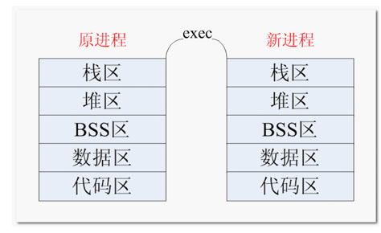
exec 函数族使用说明
exec 函数族的 6 个函数看起来似乎很复杂，但实际上无论是作用还是用法都非常相似，只有很微小的差别。
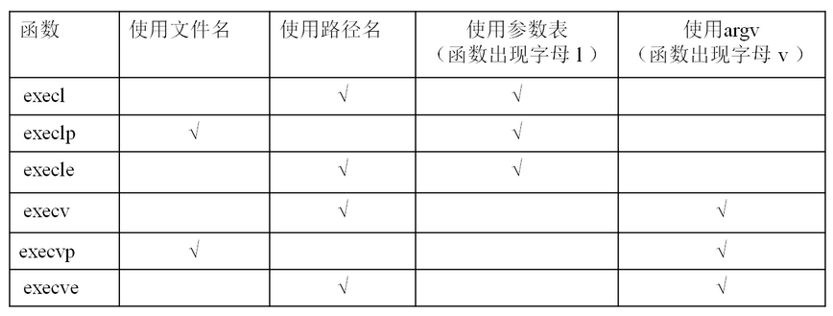
补充说明：
| l(list) | 参数地址列表，以空指针结尾 |
|---|---|
| v(vector) | 存有各参数地址的指针数组的地址 |
| p(path) | 按 PATH 环境变量指定的目录搜索可执行文件 |
| e(environment) | 存有环境变量字符串地址的指针数组的地址 |
exec 函数族与一般的函数不同，exec 函数族中的函数执行成功后不会返回，而且，exec 函数族下面的代码执行不到。只有调用失败了，它们才会返回 -1，失败后从原程序的调用点接着往下执行。
20. 源码包安装(扩展)
第一步：生成Makefile和检测当前环境
deng@itcast:~/tools/valgrind-3.13.0 sudo ./configure
第二步: 编译源码 生成可执行文件
deng@itcast:~/tools/valgrind-3.13.0$ sudo make -j4
第三步： 安装
deng@itcast:~/tools/valgrind-3.13.0$ sudo make install
第四步：测试
deng@itcast:~/tools/valgrind-3.13.0$ valgrind valgrind: no program specified valgrind: Use --help for more information.
21. 作业
1）编写测试程序,测试fork之前打开文件，父子进程之间是否共享文件
提示：
- 子进程write
- 父进程read
2）多进程编程
父进程fork三个子进程：
- 一个调用ps命令
- 一个调用自定义应用程序
- 一个调用会出现段错误的程序
父进程回收三个子进程(waitpid)，并且打印三个子进程的退出状态
3) 文件操作
统计出指定目录中普通文件的个数.(递归)
22. 总结